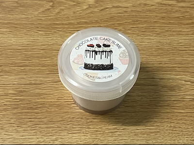
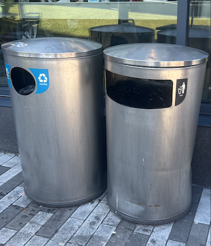

I decided to start recording and sharing my trash each week to be able to grasp a good idea of what sort of waste I produce as an individual. This would allow me to be aware of my waste generation patterns and my consumption of products each week. This would be a trash tracker for myself and possibly remind others who might also have similar stuff they might want to dispose of.
Besides that, by sharing my trash weekly, it can raise awareness on just how much trash an individual produces and can also encourage waste reduction and recycling. I hope through sharing my weekly trash, I would be able to impact people’s daily choices by thinking thoroughly before deciding to purchase or obtain them. I hope to be able to possibly connect with more like-minded people and work together in living a more sustainable and greener lifestyle.
Moreover, through this weekly trash record, it would be a personal challenge to me to start reducing waste and rethink of my own choices before buying something. It allows me to start finding other alternatives for items, possibly get items that are more durable to avoid producing as much waste or be more cautious when using items to avoid damaging them and having to get replacements. This also enable me to start living a more minimalistic lifestyle as well as being an example to others in reducing waste production starting from home.
Back to TopThis week’s trash were mostly old or broken things that are laying around in my dorm. This project encouraged me to start disposing of a few of the broken/old items in my room that are of no use to me anymore. I even have already bought replacements for some of the items and some of them are just laying around in the room waiting to be thrown out someday and that someday was the day I started this project. The trash of the week can be divided into 4 groups, unwanted toys, broken things, old used items and single-use item.
The first category is the unwanted toys. In this category of discarded items, it consists of 2 McDonalds’s Happy Meal toys and an old slime. The McDonalds’s Happy Meal toys are modeled after 2 animated characters, Belle from Beauty and the Beast and The Mandalorian, as part of their collaboration with Disney during Disney’s 100th anniversary. I got these toys through a blind box when I ordered the Happy Meal during the collaboration period that was about November 2nd. I thought they were really cute and decided to try my luck hoping I’d get Stitch, one of my favorite Disney characters, however instead I got duplicates of both Belle and The Mandalorian. I didn’t really know what to do with the duplicates, so I just left them on my desk and recently my friend mentioned about how she’s sad that she missed the McDonald’s and Disney collaboration back in November. Therefore, I decided to give them to her since it’d be a waste to just leave them there or to throw them away when I have duplicates. The slime on the other hand, was given to me as a birthday gift, it’s a birthday theme white butter slime with some sprinkles in it. This was my very first slime and I really enjoyed playing with it but sadly after some time it isn’t as fluffy and soft anymore. It has also collected some dirt and so I decided to throw it away.
The second category of trash is broken things. This category consists of a faulty phone charger, broken folding umbrella and a broken travel pouch. The faulty phone charger looks just like the regular iPhone lightning chargers, a white cable. I think I got it like 2 years ago when I got my phone. The charging cable got frayed and sometimes it doesn’t work when I charge my phone so I decided to discard the old one and get a new one instead. Besides that, the next item, the umbrella, is a black/gray plaid pattern folding umbrella. It was given to me by my brother when he was buying one for himself about 5 years ago. It was a durable umbrella that sheltered me on multiple rainy occasions but sadly one day it couldn’t withstand the wind and one of the ribs (the metal frame of the umbrella) broke and so I had to replace it. The last item in this category is the broken travel pouch. It is a navy blue pouch made of mesh like material with 1 zipped compartment on the inside. It was given to me by my father at around my freshman year to keep my cables. It’s been with me to a lot of places, holding all my adapters and cables in one place. I’ve decided to throw it away as it’s zippers could not be used anymore; it’s stuck on one side and it could not zip properly.
As for the old used items category, there is the old used notebook that I got since freshman year from Target for note taking in my classes. It is a red colored notebook with a spiral binding. It has been through a lot throughout these 3 years, it contains all of my notes from classes during freshman and was also used as a scribble/working book for assignments. All of its pages have been used and the notes are of no use to me anymore as I’ve transferred them to my computer hence, it will be recycled. Next, the old bottle brush cleaner that was from Walmart has been in my home for a very long time and it was then brought to the dorms to be used to clean my bottles. It looks just like most bottle brush cleaners but with a blue handle with blue and white bristles. Over time, it’s bristles at the tip has frayed and it doesn’t clean the bottles as well anymore and a new one is needed, so this old bottle brush cleaner is thrown away. In addition to that, my old sneakers are also categorized under this category. It is a black and white Adidas sneaker which I got about 6 years ago. They were one of my favorite sneakers as they were really comfortable and they match with a lot of different outfits because of its black and white color and I’ve worn it to most of the occasions or outings I’ve had before. They are part of the trash because I’ve outgrown them; they are too tight for me now and there’s also some holes on the side of the shoe from wear and tear.
Lastly, in the single-use item category, there is only one trash that I have, that is the used dryer sheet. I bought them at Target at the start of the Fall semester (about 5 months ago) and I’ve been using them when I do my laundry. It is a single-use product and therefore after using it in the dryer, it will be thrown away.
Back to Top| Item | Weight | Source | Location | Cost | Owned | Mode | Usefulness |
|---|---|---|---|---|---|---|---|
| 2 McDonald’s Happy Meal toys | 45g | McDonald’s | Desk | $ | 3 months | Given to friend | 1/10 |
| Old slime | 55g | Amazon | Bedroom | gift | 1 year | Trash | 5/10 |
| Faulty phone charger | 45g | Apple store | Desk | $$ | 2 years | Trash | 10/10 |
| Broken folding umbrella | 200g | Brother | Backpack | $ | 5 years | Trash | 10/10 |
| Broken travel pouch | 50g | Father | Luggage | $$ | 3 years | Trash | 10/10 |
| Old used notebook | 500g | Target | Desk | $ | 3 years | Recycled | 10/10 |
| Old bottle brush cleaner | 35g | Walmart | Kitchen | $ | 10 years | Trash | 8/10 |
| Old sneakers | 600g | Adidas | Shoe rack | $$$ | 6 years | Trash | 10/10 |
| Used dryer sheet | 1g | Target | Shelve | $ | 5 months | Trash | 7/10 |
2 McDonald’s Happy Meal toys during the collaboration with Disney 100
Old slime that was given to me on my birthday
Faulty Apple lightning phone charger whose cable has frayed
Folding umbrella that has a broken rib
Broken travel pouch with a stuck/broken zipper
Old Mead used notebook
Old bottle brush cleaner that doesn't clean bottles anymore
Old Adidas sneakers that is too small for me now
Used dryer sheet that is a single-use item
Back to TopI’ve selected the faulty phone charger as the item for this week because I think it is a pretty common waste that people will produce. This cable has been with me for about 2 years and it has been with me almost everywhere. It is about 2 meters long which was long enough and convenient whenever the outlet is far from where I am. I don’t have to worry about tugging it and being able to leave my phone to charge on a safer surface like on the table or shelve. Sometimes when I don’t need that long of a cable I just have to tie the remaining cable with a Velcro strip. Like most stuff, wear and tear occurs in addition to the frequent usage and probably some accidental bending of the wire at odd angles, the cable frayed near the lightning output area. It would disconnect at random times from charging and sometimes it wouldn’t charge at all when plugged in. I’ve bought a new charger and I do not use this old charger anymore, so it is thrown away.
The Apple lightning charger was introduced back in 2012, it is created and designed by Apple Inc. Most of the lightning cables has a “Designed by Apple in California” and either “Assembled in China”, “Assembled in Vietnam” or "Indústria Brasileira". Mine was “Assembled in China”. The lightning cable was introduced on September 12, 2012 together with the then new iPhone 5 in replacement of the 30-pin dock connector. Apple later on November 25, 2012 obtained the trademark “Lightning” in Europe from Harley-Davidson. Ever since then it has become a standard Apple device feature, it also represents a shift in the way people charge their phones, changing to a smaller and faster charging/data transferring. After doing some research, it seems that Apple was both criticized and praised for its environmental impact. It was criticized for its wasteful raw materials during manufacturing and the amount of e-waste that is created by their products. On the other hand it was praised for the reduction in using chemicals in the products and for their transition to clean energy supplies.
Action Shot of the Apple lightning cable in use:
That is the trash of the week! Looking forward to seeing what sort of trash I would be disposing of next week, and I hope to be able to see a variety and possibly be able to dispose of more stuff that I do not need anymore. Thank you all for visiting my page and staying with me throughout my first journey in this project. Hope to see you all too in the next trash of the week!
Back to Top
Hi everyone! Nice to meet you all! I'm Jia Wern but feel free to call me jw for short. I'm currently a junior at Rutgers University, majoring in Computer Science!
In my free time, I like to indulge in two of my favourite hobbies: listening to music and play games. When it comes to music, I really enjoy the pop genre, particularly K-Pop and J-Pop. As for games, one game that Ive been active on and really enjoy is " Sky: Children of the Light". It's a very relaxing and beautiful game where you can explore around the world of Sky, make new friends from around the world, have fun with friends and more! Unlike most popular or trending games, this game isn't a hero shooter video game, battle arena that requires a lot of strategic thinking. Sky is more of a adventure and exploration game where you can just have fun, hang out with friends, collect cool costumes, masks, etc for your avatar (typically called Sky kid by players). If you're looking for a fun relaxing game where you can unwind after a tiring day of classes, you should definitely try playing Sky!
Back to TopTrash bins by Silvers Apartments on Busch Campus

Recycle bins where we dispose of recyclables by Silvers Apartments on Busch Campus
Trash cans by RU Hungry at The Yard on College Avenue Campus

A white plastic fork lying on the ground by the Yard bus stop on College Avenue. I think it is pretty common for plastic utensils to be found lying on the ground especially around places like The Yard as students would often get take out and rush to classes.